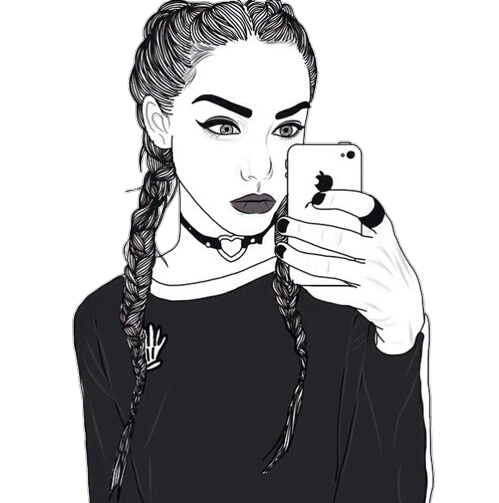

Sosiale medium gjør at vi kan framstille oss slik som vi helst vil være. Sosiale medium gjør derfor at vi opplever å ha større kontroll i kommunikasjonen med andre enn i virkelige samtaler.Dei sosiale reglene som blir praktisert på nett i dag, står i sterk kontrast til det vi gjorde på nettet for bare ti år siden. Da var det uvanlig å legge ut sitt eige navn og bilde. Dei fleste nettbrukerne var anonyme.
Endringene siden den gang er i høg grad drevet fram av nye bruksmønster og funksjoner i sosiale medium. Siden vi nå oftere bruker ekte identiteter er vi mer synlig på nettet, og det har skapt bedre vilkår for tillit mellom mennesker på nett. Men vi vet likevel ikke om identiteten til den vi kommuniserer med, er en korrekt eller en falsk identitet
Det og vise ansikt på nettet er den nye normen, og selfiekulturen er et døme på det. En selfie er et fotografisk selvportrett – et øyeblikksbilde som er vanligvis tatt med en smarttelefon og lagt ut på sosiale medium. Oftest viser vi da det beste og mest attraktive med oss selv. Og vi bruker ofte dette bilde som profil bilde vårt. En selfie er dermed en måte du kan bruke til og si «Hei,se på meg».
